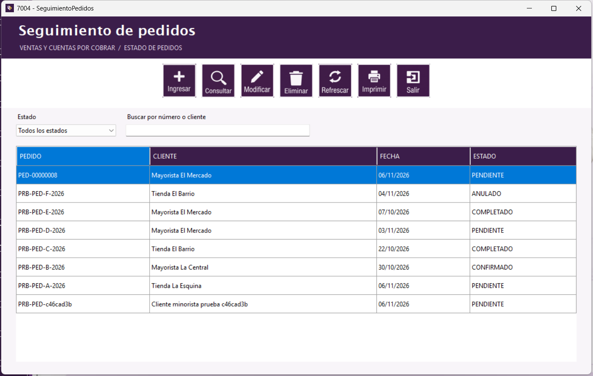

Pedidos | Seguimiento de pedidos

Formulario de seguimiento.
Buscar y generar el reporte
- Filtre por Estado o escriba un número de pedido o nombre de cliente.
- Seleccione una fila para consultar o modificar el pedido. Eliminar cambia su estado a ANULADO; no lo borra.
- Para el reporte, pulse Imprimir, elija las fechas y el estado deseado, y pulse Generar reporte. El visor permite imprimir o exportar.
Botones de este formulario
| Botón | Acción |
|---|
 | Abre un pedido nuevo. |
 | Muestra el pedido seleccionado. |
 | Edita el pedido cuando está permitido. |
 | Cambia a ANULADO un pedido pendiente o confirmado. |
 | Actualiza la lista. |
| Abre el reporte por rango de fechas. |
 | Abre esta página. También puede presionar F1. |
| Cierra seguimiento. |
Manual de usuario · Seguimiento de pedidos · Aplicación 7004